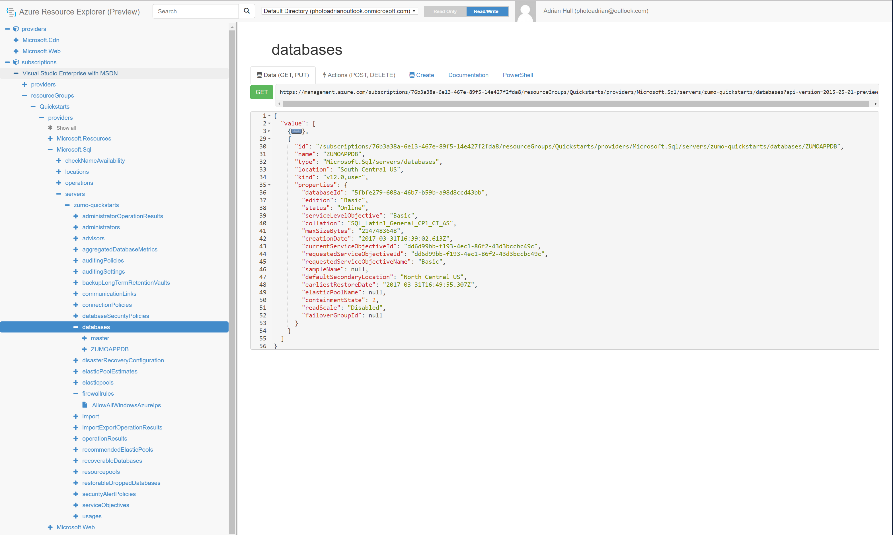
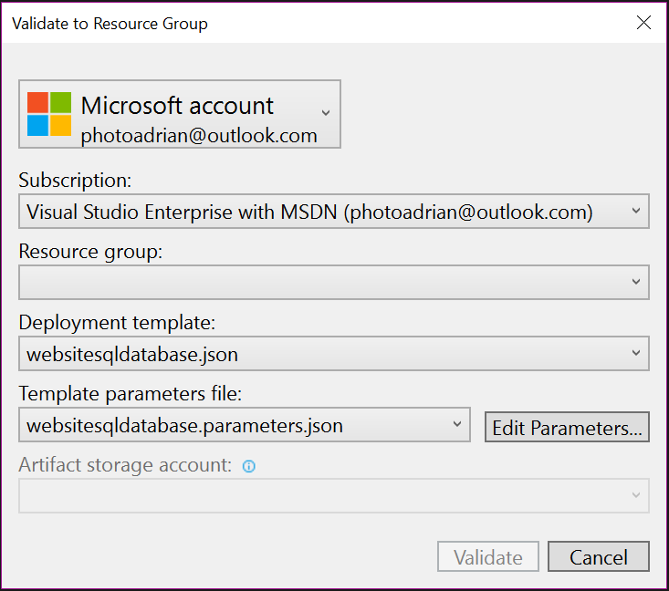
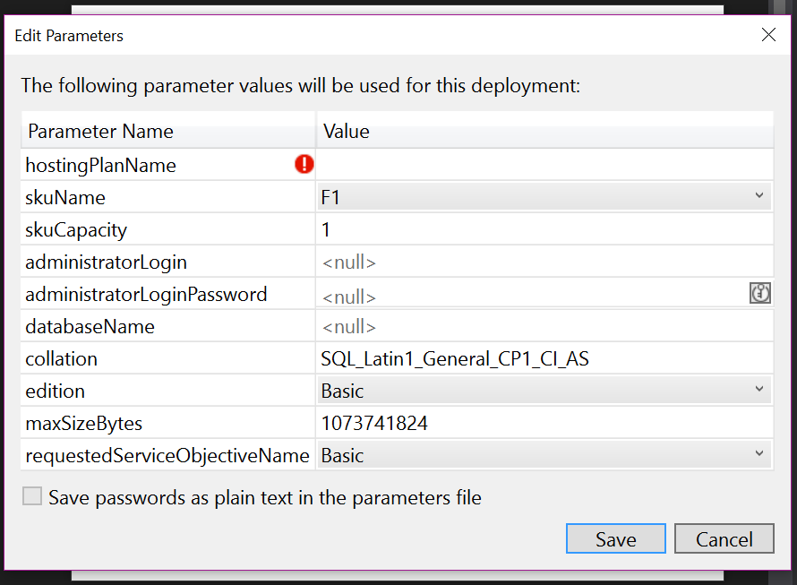
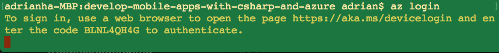
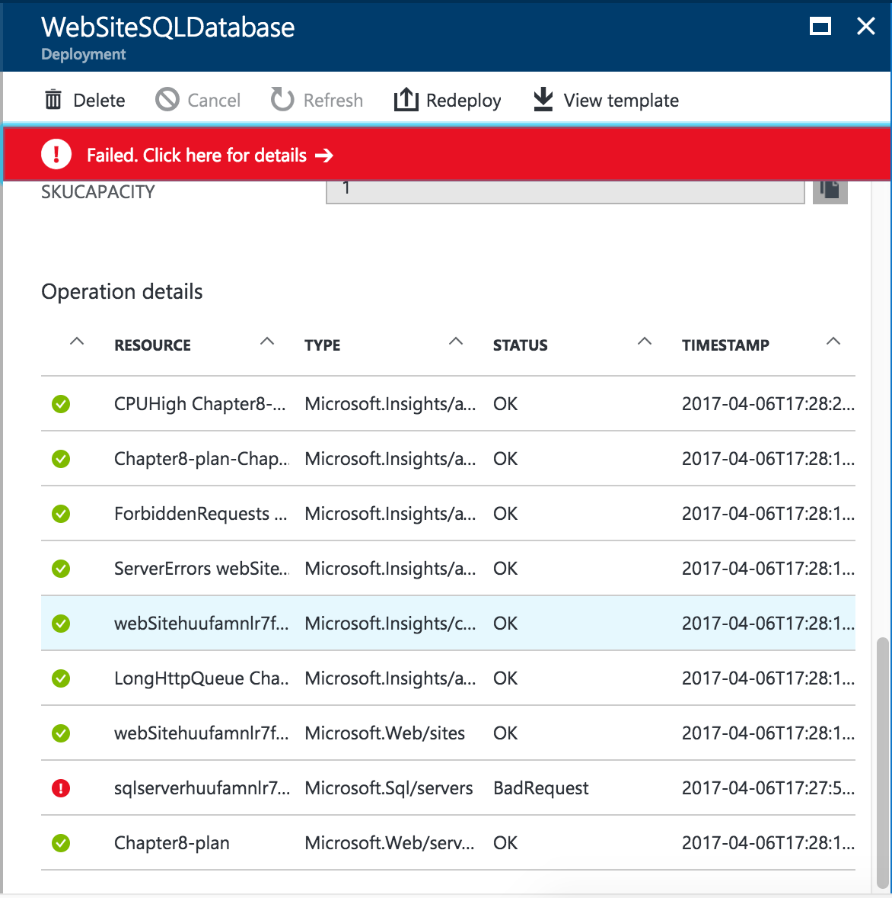
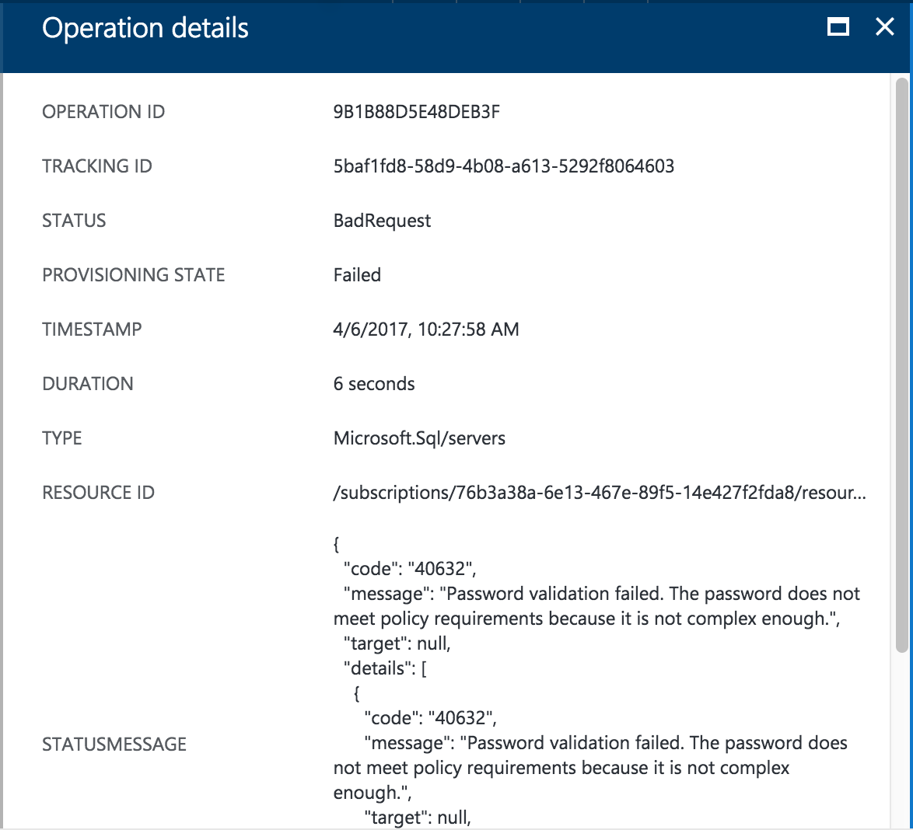

Repeatable Deployments¶
You've finally got to the point where you want to release your app to the general public. Congratulations! I'm not going to cover releasing to the App Store in this section. Each App Store has their own rules and requirements for apps and they change all the time. You will need to follow their instructions. If you haven't already, make sure you have a paid developer account for this activity.
That doesn't mean that you can't deal with the backend. Now that your app is in production, you want your backend in production as well. That means being as hands-off as possible and ensuring that human error does not cause a significant downtime. We've heard about various outages as a result of human error. Make sure that doesn't happen to you. Fortunately, Azure has a number of facilities to ensure that you can automate the process.
Options for Deployment¶
When deploying the backend, you want a repeatable process. Ideally, you want a set of scripts that you check into source code that describes the deployment of Azure resources. Once you have set up your environment, you can use continuous deployment (in the next section) to actually perform the deployments. However, you still want to automate the deployment of a new set of resources.
Fortunately, Azure (in common with any reasonable cloud service) has tools to do this. In essence, the tools consist of a file - the Azure Resource Manager Template, and a set of PowerShell or command-line tools to deploy a new service. Every time you create a mobile app in Azure App Service, Azure Resource Manager handles the actual provisioning behind the scenes. It is much faster to use an ARM template rather than the point-and-click mechanism we have been using thus far.
Creating an ARM Template¶
Let's start by examining a typical application - our Task List backend. We've set this up a number of times within this book, so you should be familiar with it. It has these resources within a resource group:
- Azure App Service with type=mobile
- Azure App Service Plan
- SQL Azure Logical Server
- SQL Azure Database
ARM templates have three distinct sections:
- Parameters provide information about the deployment set in a single place.
- Variables are computed parameters.
- Resources list the resources necessary to be deployed.
A typical (empty) ARM template looks like this:
{
"$schema": "http://schema.management.azure.com/schemas/2014-04-01-preview/deploymentTemplate.json",
"contentVersion": "1.0.0.0",
"parameters": {
},
"variables": {
},
"resources": [
]
}
There is also an outputs section, but I find most templates do not require this section.
Parameters and Variables¶
If I am creating a deployment called zumobook, then I always name the resources like this:
- Resource Group = zumobook
- Azure App Service = zumobook
- App Service Plan = zumobook-plan
- SQL Azure Logical Server = zumobook-sql
- SQL Azure Database = zumobook-db
All the resources are based on the root name of the deployment. Ideally, the deployment name would be a parameter (something I specify) and the other names would be computed. In addition, I always make the administrator login for the SQL Azure Logical Server be azure and I specify the password. Let's take a look at what that would look like:
{
"$schema": "http://schema.management.azure.com/schemas/2014-04-01-preview/deploymentTemplate.json",
"contentVersion": "1.0.0.0",
"parameters": {
"serviceName": {
"type": "string"
},
"sqlServerAdminLogin": {
"type": "string",
"defaultValue": "azure"
},
"sqlServerAdminPassword": {
"type": "securestring"
}
},
"variables": {
"appServiceName": "parameters('serviceName')",
"appServicePlanName": "[concat(parameters('serviceName), '-plan')]",
"sqlServerName": "[concat(parameters('serviceName), '-sql')]",
"sqlDbName": "[concat(parameters('serviceName), '-db')]"
},
"resources": [
]
}
Variable Functions
Note the concat() is a template function. You can find the large list of template functions in the Azure Resource Manager documentation.
As a best practice, I abstract anything I would normally enter in creating the resource and make it either a parameter or a variable, depending on the circumstance. I try to reduce the number of parameters and make as much as I can either a default value or a variable. For example, one of the things that we need to set when configuring a SQL Azure database is the database size. I could just specify this in bytes, but specifying the size in Mb is a better experience:
"parameters": {
"sqlDbSizeMb" {
"type": "int",
"minValue": 1,
"maxValue": 20,
"description": "Size of the database in Mb",
"defaultValue": 5
}
},
"variables": {
"sqlDbSize": "[mul(parameters('sqlDbSizeMb'), 1048576)]"
}
Resources¶
Resources describe the deployment of individual resources and their dependency. There are, inevitably, more resources than you expect. Each resource has an apiVersion, formatted as a date, that describes the format of the resource. Each resource also has a name and a type plus a number of other elements that describe configuration elements. Finally, there is an optional dependsOn that ensures that resources are not configured until their dependent resources are deployed. If, for example, I look at my deployment, I can represent this as a tree:
- Resource Group
- App Service Plan
- App Service
- App Settings
- Connection Strings
- Continuous Deployment Source
- App Service
- SQL Azure Logical Server
- SQL Database
- SQL Server Firewall Rules
- App Service Plan
Let's look at each resource in turn.
The SQL Database¶
There are actually three resources for the SQL Database - the server, the database and the firewall rule to allow other resources to connect to it:
{
"$schema": "http://schema.management.azure.com/schemas/2014-04-01-preview/deploymentTemplate.json",
"contentVersion": "1.0.0.0",
"parameters": {
"serviceName": {
"type": "string"
},
"location": {
"type": "string",
"defaultValue": "South Central US"
},
"sqlServerAdminLogin": {
"type": "string",
"defaultValue": "azure"
},
"sqlServerAdminPassword": {
"type": "securestring"
},
"sqlDbSizeMb" {
"type": "int",
"minValue": 1,
"maxValue": 20,
"description": "Size of the database in Mb",
"defaultValue": 2
},
"sqlDbCollation": {
"type": "string",
"defaultValue": "SQL_Latin1_General_CP1_CI_AS"
},
"sqlDbEdition": {
"type": "string",
"defaultValue": "Basic"
},
"sqlDbServiceObjectiveId": {
"type": "string",
"defaultValue": "dd6d99bb-f193-4ec1-86f2-43d3bccbc49c"
},
},
"variables": {
"sqlDbSize": "[mul(parameters('sqlDbSizeMb'), 1048576)]",
"sqlServerName": "[concat(parameters('serviceName), '-sql')]",
"sqlDbName": "[concat(parameters('serviceName), '-db')]"
},
"resources": [
{
"apiVersion": "2014-04-01-preview",
"name": "[variables('sqlServerName')]",
"type": "Microsoft.Sql/servers",
"location": "[parameters('location')]",
"properties": {
"administratorLogin": "[parameters('sqlServerAdminLogin')]",
"administratorPassword": "[parameters('sqlServerAdminPassword')]"
},
"resources": [
{
"apiVersion": "2015-05-01-preview",
"name": "[variables('sqlDbName')]",
"type": "databases",
"location": "[parameters('location')]",
"dependsOn": [
"[resourceId('Microsoft.Sql/servers', parameters('sqlServerName'))]"
],
"properties": {
"edition": "[parameters('sqlDbEdition')]",
"collation": "[parameters('sqlDbCollation')]",
"maxSizeBytes": "[variables('sqlDbSize')]",
"requestedServiceObjectiveId": "[parameters('sqlDbServiceObjectiveId')]"
}
},
{
"apiVersion": "2014-04-01-preview",
"name": "SQLServerFirewallRules",
"type": "firewallrules",
"location": "[parameters('location')]",
"dependsOn": [
"[resourceId('Microsoft.Sql/servers', parameters('sqlServerName'))]"
],
"properties": {
"endIpAddress": "0.0.0.0",
"startIpAddress": "0.0.0.0"
}
}
]
},
]
}
This is a fairly lengthy example, but it incorporates a few things. Firstly, note that I use the [variables()] and [parameters()] to bring in the variables and parameters respectively. I also have embedded resources here. The resource heirarchy is a tree-structure. Each embedded resource has a dependsOn array that has the parent as a dependent resource.
You are probably wondering where you can get this information for any resource. Microsoft Azure has a site called resources.azure.com. This contains the resources that you currently have configured on your subscription. You can set the deployment up by hand and then look at the resources to get the details:

In this example, I'm showing the resource for the database. I can extract the various pieces based on what I have set to get to this point - everything else is defaulted. In addition, note that I can see the apiVersion at the top of the resource manager within the URL for the resource definition.
The Azure App Service Plan¶
My next resource is the App Service Plan. Unlike the database (which has a definite heirarchy), the App Service Plan is separate because many App Services can use the same App Service Plan. You can think of the App Service Plan as the set of virtual machines that belong in a single scale set, and the App Services as the web sites running on top of that scale set. The App Service Plan looks like this:
{
"$schema": "http://schema.management.azure.com/schemas/2014-04-01-preview/deploymentTemplate.json",
"contentVersion": "1.0.0.0",
"parameters": {
"serviceName": {
"type": "string"
},
"location": {
"type": "string",
"defaultValue": "South Central US"
},
"sku": {
"type": "string",
"allowedValues": [
"Free",
"Shared",
"Basic",
"Standard"
],
"defaultValue": "Basic"
},
"workerSize": {
"type": "string",
"allowedValues": [
"0", "1", "2"
],
"defaultValue": "0"
}
},
"variables": {
"appServicePlanName": "[concat(parameters('serviceName), '-plan')]",
},
"resources": [
{
"apiVersion": "2015-08-01",
"name": "[variables('appServicePlanName')]",
"type": "Microsoft.Web/serverFarms",
"location": "[parameters('location')]",
"properties": {
"name": "[parameters('appServicePlanName')]",
"sku": "[parameters('sku')]",
"workerSize": "[parameters('workerSize')]",
"numberOfWorkers": 1
}
}
]
}
The hostingPlanName is the name of the hosting plan. This is normally something like F1, B2, or P3. The first letter indicates the SKU and the number indicates the size of the worker. The size of the worker is always one less than the number that is displayed within the Azure portal.
The Azure App Service¶
The Azure App Service is
{
"$schema": "http://schema.management.azure.com/schemas/2014-04-01-preview/deploymentTemplate.json",
"contentVersion": "1.0.0.0",
"parameters": {
"serviceName": {
"type": "string"
},
"location": {
"type": "string",
"defaultValue": "South Central US"
},
"sqlServerAdminLogin": {
"type": "string",
"defaultValue": "azure"
},
"sqlServerAdminPassword": {
"type": "securestring"
},
"deploymentRepoUrl": {
"type": "string"
},
"deploymentRepoBranch": {
"type": "string",
"defaultValue": "master"
}
},
"variables": {
"appServiceName": "parameters('serviceName')",
"appServicePlanName": "[concat(parameters('serviceName), '-plan')]",
"sqlServerName": "[concat(parameters('serviceName), '-sql')]",
"sqlDbName": "[concat(parameters('serviceName), '-db')]"
},
"resources": [
{
"apiVersion": "2015-04-01",
"name": "[variables('appServiceName')]",
"type": "Microsoft.Web/sites",
"location": "[parameters('location')]",
"dependsOn": [
"[resourceId('Microsoft.Web/serverFarms', parameters('appServicePlanName'))]"
],
"properties": {
"serverFarmId": "[parameters('appServicePlanName')]"
},
"resources": [
{
"apiVersion": "2015-04-01",
"name": "connectionstrings",
"type": "config",
"dependsOn": [
"[resourceId('Microsoft.Web/Sites', variables('appServiceName'))]",
"[resourceId('Microsoft.Sql/servers', parameters('sqlServerName'))]"
],
"properties": {
"MS_TableConnectionString": { "value": "[concat('Data Source=tcp:', reference(concat('Microsoft.Sql/servers/', variables('sqlServerName'))).fullyQualifiedDomainName, ',1433;Initial Catalog=', variables('sqlDbName'), ';User Id=', parameters('sqlServerAdminLogin'), '@', parameters('sqlServerName'), ';Password=', parameters('sqlServerAdminPassword'), ';')]", "type": "SQLAzure" }
}
},
{
"apiVersion": "2015-04-01",
"name": "web",
"type": "sourcecontrols",
"dependsOn": [
"[resourceId('Microsoft.Web/Sites', variables('appServiceName'))]",
"[resourceId('Microsoft.Web/Sites/config', variables('appServiceName'), 'connectionstrings')]"
],
"properties": {
"RepoUrl": "[parameters('deploymentRepoUrl')]",
"branch": "[parameters('deploymentRepoBranch')]"
}
}
]
},
]
}
In this case, we've got two dependent resources - one to set up the connection string to the database and the other to set up continuous deployment. Both of those dependent resources have the normal dependsOn terms to ensure that the resources linked exist.
You can combine all three sections - the SQL Server, App Service Plan and App Service together. There are overlapping parameters and variables. You just need one copy.
Deploying an ARM Template on Windows¶
Creating an Azure Resource Manager template on Windows can be done several ways, but my favorite is to use Visual Studio.
- Start up Visual Studio 2017 and open your solution.
- Right-click your solution and select Add -> New Project....
- Select Installed > Visual C# > Cloud > Azure Resource Group.
- Give the project a name, then click OK
- Select a template (I use Web app + SQL normally as a starting point), then click OK.
Three files are created within the project:
- Deploy-AzureResourceGroup.ps1
- WebSiteSQLDatabase.json (or similar)
- WebSiteSQLDatbase.parameters.json (or similar)
The WebSiteSQLDatabase.json is the ARM template. The .parameters.json file contains the parameters for an unattended deployment. Since the parameters contains the SQL server password, we need to be careful to ensure that the database password does not end up checked into source code. Finally, the Deploy-AzureResourceGroup.ps1 file is a handy PowerShell script for deploying to Azure. Running it will be the equivalent of doing a deployment via Visual Studio.
You can now edit the ARM template to include any additional resources you need. You can also edit the .parameters.json file to set standard values for any parameters you wish, if they don't change very often, although you won't need to do this as there is an easier way of setting parameters as we shall see.
There are two steps to deploying this ARM template: Validation and Deployment. To validate the template, right-click the project and select Validate.

Click into the Resource group and select Create new. This allows you to select a resource group name and a location. Once you have done that, click Create.
The next step is to click Edit Parameters.... This edit the .parameters.json file:

Note that we need to set a hostingPlanName, as indicated by the red exclamation error mark. We can also set any other values we want. Anything that has a null value should be entered. Click Save when complete.
Do not save password as plain text
It's likely that these files will end up in source control. You should never save passwords as plain text in any file that is going to end up in a source control repository.
Finally, click Validate. You may get validation errors - fix the validation errors before continuing. Once you have validated successfully, right-click the deployment project and select Deploy, then select the resource group you entered during validation. You may have to type the SQL administrator password multiple times.
Watch the output window for a progress report on your deployment. Once complete, log into the Azure portal to check the resources. Also check that the resources match what you were expecting within the Azure Resource Explorer.
Deploying an ARM Template on MacOS¶
The Mac does not come with the tools necessary to deploy ARM templates, so you will need to download and install them first. In a Terminal window:
adrian$ curl -L https://aka.ms/InstallAzureCli | bash
adrian$ exec -l $SHELL
The first command does the actual installation. It will ask you questions about where to install and confirm that it can write to files. In general, pressing Enter will do the right thing. The second command restarts your shell. After the installation is complete, run az in your Terminal window to ensure the installation was successful.
The next step is to login to Azure with the CLI. Use the az login command from the Terminal window. This command will output a code to use in the next step.

Note the code that is produced. Now go to http://aka.ms/devicelogin and enter the code in the box provided.
Enter the code, press enter, then click Continue. You will be asked to authenticate to Azure. Once that is complete, the terminal window will continue and you will be logged into Azure. The az login command will provide a little piece of JSON to show you the subscription information to which you connected.
Deploying a set of resources is a two-step process on the command-line. Firstly, you need to create a resource group. Then you need to deploy the resources within that resource group. To create a resource group, use:
az group create -l westus -n MyResourceGroup
You can get a list of locations that are available to you using:
az account list-locations | grep name
Take a look at the response from the az group create command. Ensure that the provisioningState property is something that indicates success.
Now that we have a resource group, we can deploy our resources. Edit the .parameters.json file to contain the values for your parameters. For example:
{
"$schema": "https://schema.management.azure.com/schemas/2015-01-01/deploymentParameters.json#",
"contentVersion": "1.0.0.0",
"parameters": {
"hostingPlanName": {
"value": "Chapter8-plan"
},
"skuName": {
"value": "B1"
},
"skuCapacity": {
"value": 1
},
"administratorLogin": {
"value": "azure"
},
"administratorLoginPassword": {
"value": "myPassword"
},
"databaseName": {
"value": "ZUMOAPPDB"
},
"edition": {
"value": "Basic"
}
}
}
Do not check in passwords!
If your parameters file contains password, do not check it in to source code control.
You can now deploy the service with the following:
az group deployment create --resource-group MyResourceGroup
--mode Complete
--parameters @WebSiteSQLDatabase.parameters.json
--template-file WebSiteSQLDatabase.json
--verbose
Although I have split this command over multiple lines, you should enter this command on one line.
Use --mode to maintain deployments
There are two modes for ARM deployments. Complete will remove any resources that are not listed in your ARM template. Incremental will only add resources to the resource group. You can use these two modes to effectively maintain the resources in the resource group using only the command line.
At this point, the deployment will kick off. It's a long running process, so expect a delay of a few minutes before it returns information. This deployment is (deliberately) going to fail so we can see what happens when it goes wrong and how to fix it.
The response after this first run is this:
The deployment operation failed, because it was unable to cleanup. Please see https://aka.ms/arm-debug for usage details. Correlation ID: aed1850d-22ca-4e28-b7fa-83a2ac587867
Start by logging into the Azure portal, then go to the resource group was just created, then click Deployments. Select the latest deployment.

Click on the failed request:

The failed request is a lot clearer than the original failure message. In this case, the password we entered for the SQL database did not meet the complexity requirements. This is easily updated within the parameters file. Then re-run the deployment.
Creating the ARM Template¶
One of the issues with ARM templates is their actual creation. There are three methods of creating ARM templates:
- Create a new Resource Group within Visual Studio (covered above)
- Export a template from a Resource Group.
- Log in to the Azure portal.
- Select your resource group.
- In the menu, click Automation Scripts.
- Click Download.
- Download a starter template from GitHub.
Which ever mechanism you choose to create the template, you will still need to edit the result by hand for your individual requirements.